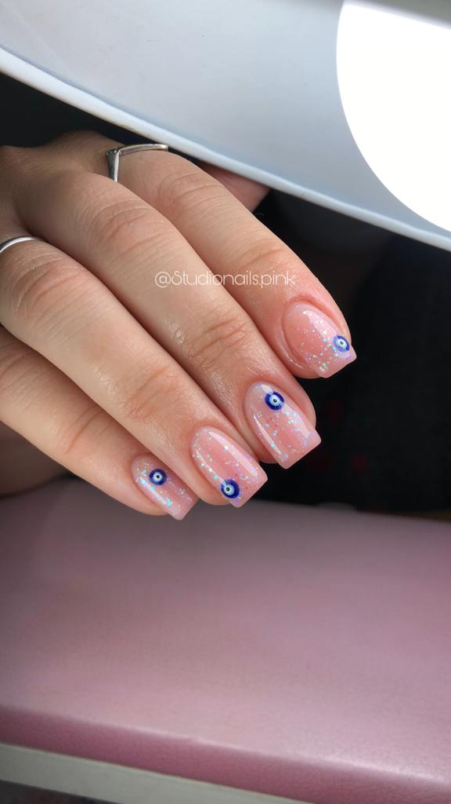

Kapping

¿Que es el kapping gel?
El kapping gel es considerado el tratamiento por excelencia para acompañar a la uña en su crecimiento y para que la proteja de cualquier factor externo, Permite nivelar la superficie de la uña. Para este tratamiento se pone una fina capa kapping sobre la uña natural ya sea sana, quebradiza, débil o escamada con el objetivo de que acompañe su crecimiento y la proteja aportándole un acabado brilloso. A diferencia de kapping en polygel, este es más flexible.